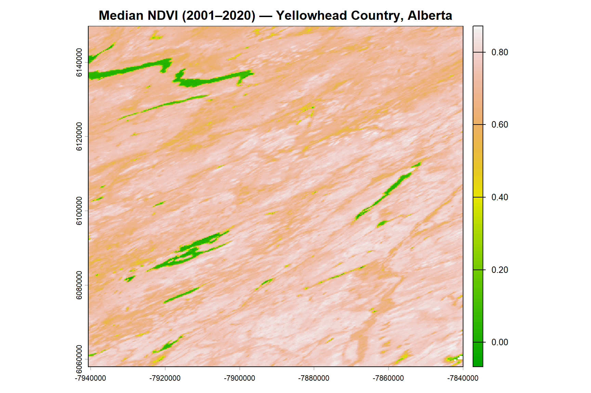
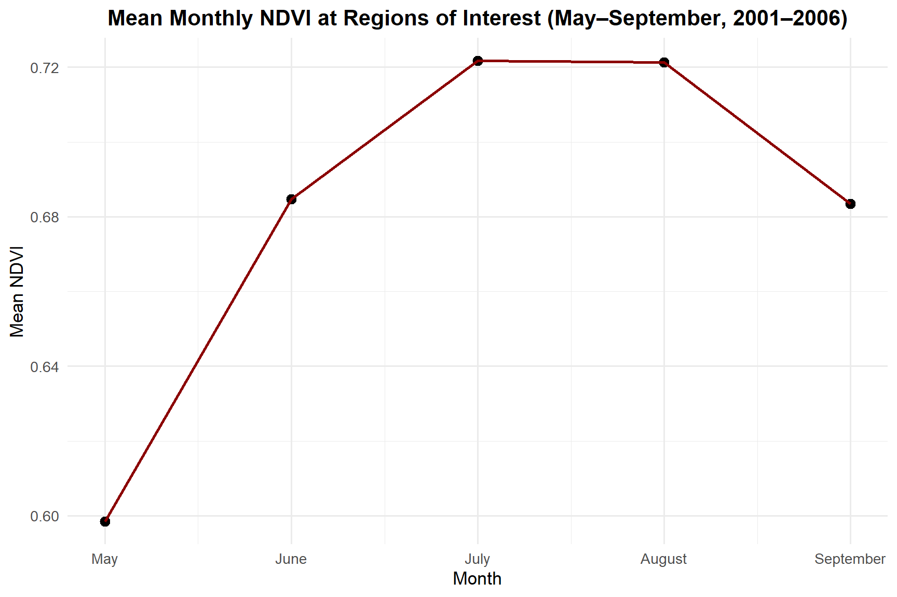
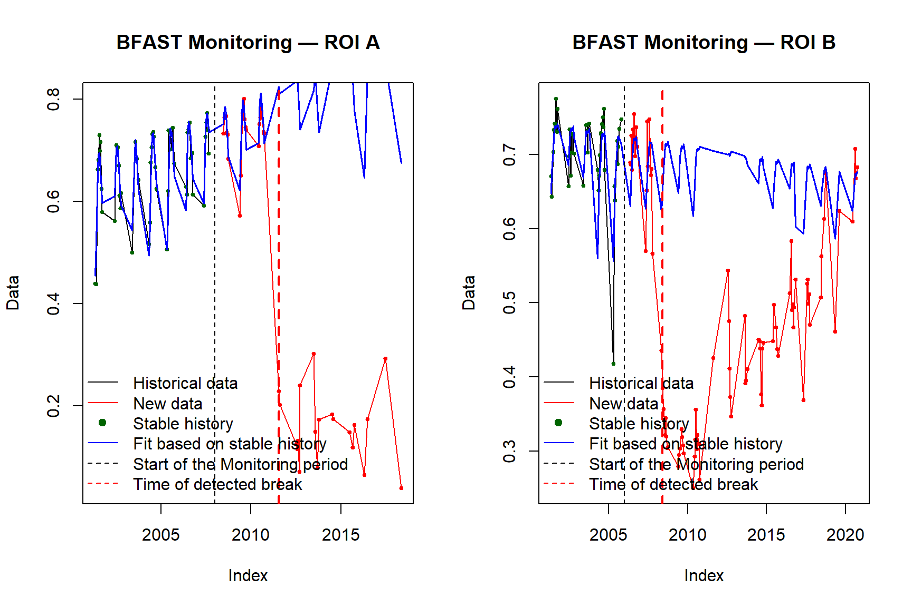
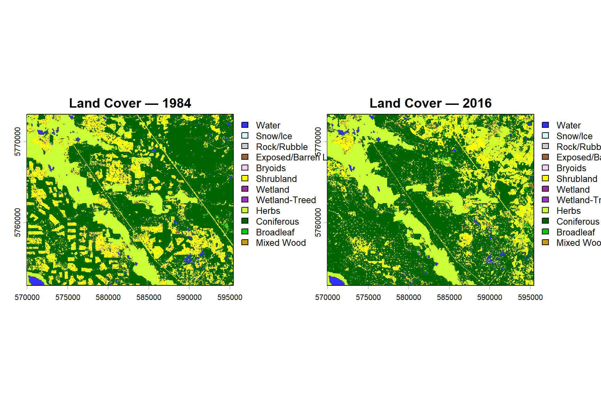
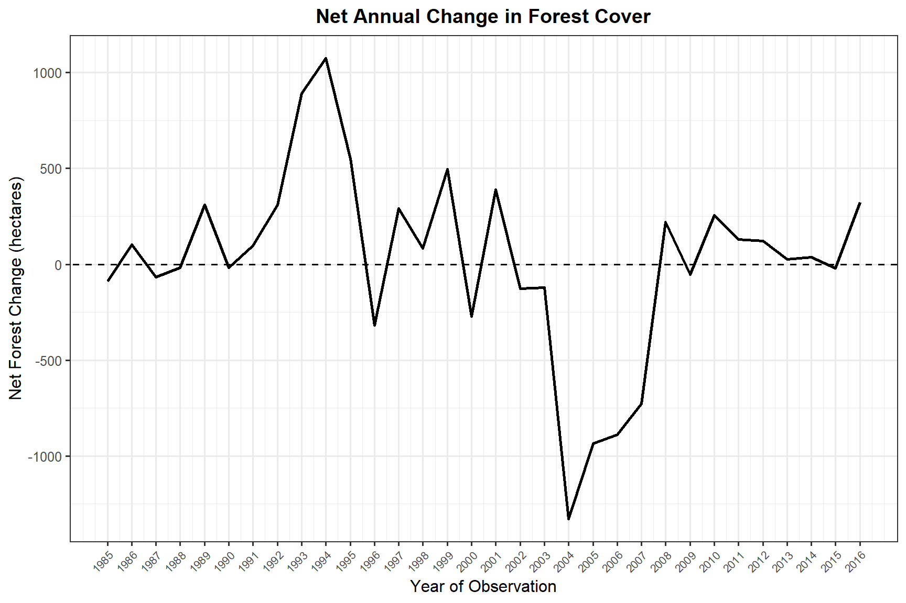
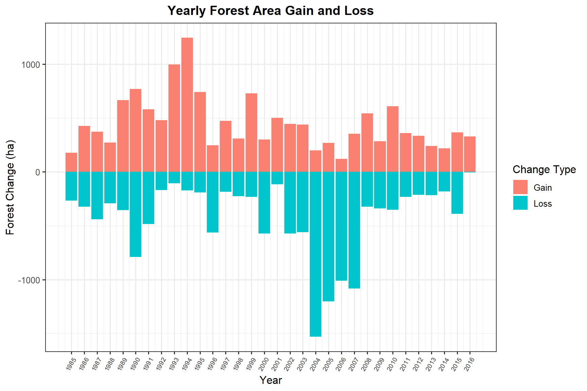

Vegetation Change Detection and Forest Cover Dynamics
MODIS NDVI Time-Series Analysis and Land Cover Change in Yellowhead Country and Williams Lake, British Columbia
Project Overview
Detecting vegetation change from satellite time-series data is fundamental to monitoring ecosystem dynamics, assessing the impacts of disturbance, and supporting land management decisions. This project addresses two related questions using complementary datasets and methods.
Part 1 focuses on a region in Yellowhead Country, Alberta, where a 20-year time series of MODIS NDVI composites (MOD13Q1, 2001–2020) is used to characterize seasonal vegetation patterns and detect abrupt changes in greenness at two regions of interest using the BFAST (Breaks For Additive Seasonal and Trend) monitoring algorithm.
Part 2 shifts to the Williams Lake area of British Columbia, where a 33-year land cover time series classified from Landsat imagery (1984–2016) is used to quantify annual forest area gain and loss, and to examine how forest cover has evolved over time in a landscape subject to active management.
Together, these analyses demonstrate how multi-temporal satellite data can reveal both gradual ecological trends and abrupt disturbance events across different spatial and temporal scales.
Data Sources
| Dataset | Description | Source |
|---|---|---|
| MOD13Q1 MODIS NDVI | 16-day NDVI composites at 250 m, 2001–2020 | LP DAAC / NASA |
| Regions of Interest | Two ROI polygons in Yellowhead Country, AB | Field-defined shapefile |
| VLCE Land Cover Time Series | Annual 30 m Landsat-based land cover, 1984–2016 | Hermosilla et al., 2018 |
| Land Cover Reclassification Table | Forested / non-forested reclassification scheme | Provided |
Packages
library(terra) # Raster data processing
library(sf) # Vector data handling
library(readr) # CSV reading
library(stringr) # String manipulation
library(lubridate) # Date parsing
library(dplyr) # Data manipulation
library(tidyr) # Data tidying
library(ggplot2) # Data visualization
library(bfast) # BFAST change detectionPart 1: MODIS NDVI Time-Series Analysis
Study Area and Dataset
The MOD13Q1 product provides 16-day NDVI composites at 250 m spatial resolution derived from the MODIS Terra satellite. Key product characteristics are summarized below.
| Parameter | Value |
|---|---|
| Spatial resolution | 250 m |
| Temporal resolution | 16-day composites |
| Temporal availability | February 2000 to present |
| Valid NDVI range (raw) | -2000 to 10000 (scale factor: 0.0001) |
| Valid NDVI range (scaled) | -0.2 to 1.0 |
The time series used in this analysis spans 2001 to 2020, with 23 composites per year, covering a study area in the Yellowhead Country region of Alberta.
Loading and Preparing the Time Series
# Listing all NDVI tif files
ndvi_files <- list.files(path = ts_dir, pattern = "tif$", full.names = TRUE)
# Extracting dates from filenames (format: A + 4-digit year + 3-digit day of year)
date_ts <- stringr::str_extract(ndvi_files, "A\\d{7}") |>
stringr::str_sub(2, 8)
# Converting to Date class
dates <- lubridate::as_date(date_ts, format = "%Y%j")
# Summarizing files per year
df_dates <- data.frame(Dates = dates) |>
dplyr::mutate(Year = lubridate::year(Dates))
year_summary <- df_dates |>
dplyr::group_by(Year) |>
dplyr::summarise(Files = n())
year_summary# A tibble: 20 × 2
Year Files
<dbl> <int>
1 2001 23
2 2002 23
3 2003 23
4 2004 23
5 2005 23
6 2006 23
7 2007 23
8 2008 23
9 2009 23
10 2010 23
11 2011 23
12 2012 23
13 2013 23
14 2014 23
15 2015 23
16 2016 23
17 2017 23
18 2018 23
19 2019 23
20 2020 23The time series spans 2001 to 2020, with 23 composites per year — one every 16 days, consistent with the MOD13Q1 product specification.
Median NDVI Across the Time Series
# Loading all NDVI layers
ndvi_ts <- terra::rast(ndvi_files)
names(ndvi_ts) <- as.character(date_ts)
# Computing pixel-wise median across the full time series
ndvi_ts_med <- terra::app(ndvi_ts, fun = median, na.rm = TRUE)
plot(ndvi_ts_med,
main = "Median NDVI (2001–2020) — Yellowhead Country, Alberta",
col = terrain.colors(100))
The median NDVI map provides a stable, cloud-free baseline of vegetation productivity across the study area. Persistently high NDVI values correspond to forested and densely vegetated areas, while lower values indicate grasslands, agricultural areas, or sparsely vegetated surfaces.
Seasonal NDVI Patterns at the Regions of Interest
Two regions of interest (ROI A and ROI B) were defined within the study area to examine how NDVI varies seasonally and over time.
# Loading ROI shapefile
roi <- terra::vect(roi_path)
# Extracting mean NDVI per ROI for each layer
ndvi_roi <- terra::extract(ndvi_ts, roi, fun = mean, na.rm = TRUE)
# Adding ROI ID and renaming columns to dates
ndvi_roi$ID <- roi$ID
colnames(ndvi_roi)[2:ncol(ndvi_roi)] <- as.character(date_ts)
# Pivoting to long format
ndvi_roi_long <- ndvi_roi %>%
tidyr::pivot_longer(
cols = -ID,
names_to = "Date",
values_to = "NDVI"
) %>%
dplyr::mutate(Date = lubridate::as_date(Date, format = "%Y%j"))# Monthly NDVI summary: May–September, first year to 2006, both ROIs combined
start_year <- lubridate::year(min(ndvi_roi_long$Date, na.rm = TRUE))
ndvi_roi_summary <- ndvi_roi_long %>%
dplyr::filter(lubridate::month(Date) %in% 5:9,
lubridate::year(Date) >= start_year,
lubridate::year(Date) <= 2006) %>%
dplyr::group_by(Month = lubridate::month(Date)) %>%
dplyr::summarise(mean_NDVI = mean(NDVI, na.rm = TRUE)) %>%
dplyr::arrange(Month)
# Connected scatter plot
ggplot(ndvi_roi_summary, aes(x = Month, y = mean_NDVI, group = 1)) +
geom_point(color = "black", size = 3) +
geom_line(color = "darkred", linewidth = 1) +
scale_x_continuous(
breaks = 5:9,
labels = c("May", "June", "July", "August", "September")
) +
labs(
title = "Mean Monthly NDVI at Regions of Interest (May–September, 2001–2006)",
x = "Month",
y = "Mean NDVI"
) +
theme_minimal(base_size = 13) +
theme(plot.title = element_text(face = "bold", hjust = 0.5))
NDVI peaks in July (mean = 0.722), consistent with maximum canopy development during the boreal growing season. August remains nearly as high before values begin to decline through September as senescence begins.
BFAST Change Detection
The BFAST (Breaks For Additive Seasonal and Trend) monitoring algorithm was applied to the full NDVI time series at each ROI to detect statistically significant deviations from expected seasonal behavior. For ROI A, monitoring began in 2008; for ROI B, in 2006.
# Separating ROI A and ROI B time series
ndvi_roi_A <- ndvi_roi_long %>% dplyr::filter(ID == "A")
ndvi_roi_B <- ndvi_roi_long %>% dplyr::filter(ID == "B")
freq <- 23 # 23 composites per year for MOD13Q1
start_year <- lubridate::year(min(ndvi_roi_long$Date))
ts_A <- ts(data = ndvi_roi_A$NDVI, frequency = freq, start = c(start_year, 1))
ts_B <- ts(data = ndvi_roi_B$NDVI, frequency = freq, start = c(start_year, 1))
# Running BFAST monitor
bfast_A <- bfastmonitor(ts_A, start = c(2008, 1))
bfast_B <- bfastmonitor(ts_B, start = c(2006, 1))
# Plotting results
par(mfrow = c(1, 2))
plot(bfast_A, main = "BFAST Monitoring — ROI A")
plot(bfast_B, main = "BFAST Monitoring — ROI B")
par(mfrow = c(1, 1))Interpretation of Detected Breaks
| ROI | Break Detected | Approximate Date | Direction | Likely Cause |
|---|---|---|---|---|
| A | 2011(14) | ~July 2011 | Decrease | Forest loss — likely wildfire or harvesting |
| B | 2008(10) | ~May 2008 | Increase | Vegetation regrowth following prior disturbance |
ROI A shows a sharp NDVI decline detected around the 14th observation of 2011, corresponding to approximately July 2011. The abrupt decrease followed by sustained low NDVI is consistent with a stand-replacing disturbance such as wildfire or clear-cut harvesting, which removes forest canopy and exposes bare soil or early regeneration.
ROI B shows an NDVI increase detected around the 10th observation of 2008 (approximately May 2008). The upward shift in greenness is consistent with vegetation recovery or secondary regrowth following an earlier disturbance event, with the canopy sufficiently re-established by 2008 to trigger a detectable change in the BFAST stable history model.
Part 2: Land Cover Time-Series Analysis
Study Area and Dataset
The second analysis focuses on a 25 x 20 km area near Williams Lake, BC, a landscape subject to active forest management including harvesting and regeneration. The Virtual Land Cover Engine (VLCE) provides annual 30 m land cover maps derived from Landsat imagery for the period 1984–2016, classifying pixels into 12 classes including coniferous, broadleaf, mixed wood, wetland-treed, and several non-forested types.
Loading and Exploring the Land Cover Time Series
# Listing all VLCE tif files
flist_vlce <- list.files(path = vlce_dir, pattern = "tif$", full.names = TRUE)
# Extracting year from filenames
year_ts <- stringr::str_extract(flist_vlce, "\\d{4}") %>% as.integer()
# Loading all layers as a single SpatRaster
vlce_ts <- terra::rast(flist_vlce)
names(vlce_ts) <- as.character(year_ts)
vlce_tsclass : SpatRaster
size : 706, 851, 33 (nrow, ncol, nlyr)
resolution : 30, 30 (x, y)
extent : 569925, 595455, 5752239, 5773419 (xmin, xmax, ymin, ymax)
coord. ref. : WGS 84 / UTM zone 10N
sources : Mosaic_LC_Class_HMM_10S_1984.tif
Mosaic_LC_Class_HMM_10S_1985.tif
Mosaic_LC_Class_HMM_10S_1986.tif
... and 30 more sources
color table : 1, 2, 3, 4, 5, 6, 7, 8, 9, 10, 11, 12, 13, 14, 15, 16, 17, 18, 19, 20, 21, 22, 23, 24, 25, 26, 27, 28, 29, 30, 31, 32, 33
names : 1984, 1985, 1986, 1987, 1988, 1989, ...
min values : Water, Water, Water, Water, Water, Water, ...
max values : Mixed Wood, Mixed Wood, Mixed Wood, Mixed Wood, Mixed Wood, Mixed Wood, ... # Plotting first and last years side by side
vlce_1984 <- vlce_ts[[1]]
vlce_2016 <- vlce_ts[[terra::nlyr(vlce_ts)]]
par(mfrow = c(1, 2), mar = c(3, 3, 3, 3))
plot(vlce_1984, main = "Land Cover — 1984")
plot(vlce_2016, main = "Land Cover — 2016")
par(mfrow = c(1, 1))Between 1984 and 2016, the study area shows a net expansion of broadleaf and coniferous forest cover, alongside increased shrubland in areas previously classified as herbs or exposed land. Stable classes include water, snow/ice, and rock/rubble, which show minimal change across the period. These patterns are consistent with a landscape undergoing cycles of harvesting, natural disturbance, and subsequent regeneration.
Reclassifying to Forested / Non-Forested
For the forest dynamics analysis, all land cover classes are reclassified into a binary scheme: forested (1) — comprising coniferous, broadleaf, mixed wood, and wetland-treed — and non-forested (0).
# Loading reclassification table
lc_reclass <- read.csv(reclass_path)
rc_matrix <- lc_reclass[, c("org_value", "new_value")]
# Classifying one layer at a time to avoid memory overflow
ts_forested_list <- lapply(1:terra::nlyr(vlce_ts), function(i) {
terra::classify(vlce_ts[[i]], rcl = rc_matrix)
})
# Stacking back into a single SpatRaster
ts_forested <- terra::rast(ts_forested_list)
names(ts_forested) <- names(vlce_ts)
ts_forestedclass : SpatRaster
size : 706, 851, 33 (nrow, ncol, nlyr)
resolution : 30, 30 (x, y)
extent : 569925, 595455, 5752239, 5773419 (xmin, xmax, ymin, ymax)
coord. ref. : WGS 84 / UTM zone 10N
source(s) : memory
varnames : Mosaic_LC_Class_HMM_10S_1984
Mosaic_LC_Class_HMM_10S_1985
Mosaic_LC_Class_HMM_10S_1986
...
names : 1984, 1985, 1986, 1987, 1988, 1989, ...
min values : 0, 0, 0, 0, 0, 0, ...
max values : 1, 1, 1, 1, 1, 1, ... Computing Annual Forest Gain and Loss
A lagged difference (lag = 1 year) is applied to the binary forested/non-forested time series to identify pixels that transitioned between forested and non-forested states between consecutive years. A value of -1 indicates forest loss (forested at T-1, non-forested at T); a value of +1 indicates forest gain (non-forested at T-1, forested at T).
ts_forested_lag <- terra::diff(ts_forested, lag = 1)# Years corresponding to the lagged difference layers (1985–2016)
years_lag <- 1985:2016
# Forest gain per year (pixels == 1), converted to hectares (30m pixels)
gain_vals <- terra::global(ts_forested_lag == 1, fun = "sum")$sum * 30 * 30 / 10000
forest_gain <- data.frame(year = years_lag, gain = gain_vals)
# Forest loss per year (pixels == -1), converted to hectares
loss_vals <- terra::global(ts_forested_lag == -1, fun = "sum")$sum * 30 * 30 / 10000
forest_loss <- data.frame(year = years_lag, loss = loss_vals)
# Joining and computing net change
forest_change <- dplyr::left_join(forest_gain, forest_loss, by = "year") %>%
dplyr::mutate(net_change = gain - loss)
forest_change year gain loss net_change
1 1985 177.66 266.94 -89.28
2 1986 426.15 324.09 102.06
3 1987 372.78 439.47 -66.69
4 1988 273.15 291.60 -18.45
5 1989 665.82 355.50 310.32
6 1990 770.22 788.58 -18.36
7 1991 582.39 485.19 97.20
8 1992 480.06 170.37 309.69
9 1993 996.03 104.58 891.45
10 1994 1244.43 170.82 1073.61
11 1995 741.15 191.97 549.18
12 1996 246.24 563.58 -317.34
13 1997 473.13 183.33 289.80
14 1998 308.52 225.63 82.89
15 1999 729.36 233.19 496.17
16 2000 301.23 571.32 -270.09
17 2001 503.46 114.84 388.62
18 2002 446.04 571.41 -125.37
19 2003 438.12 558.27 -120.15
20 2004 200.61 1528.92 -1328.31
21 2005 268.92 1202.94 -934.02
22 2006 121.05 1009.08 -888.03
23 2007 354.51 1081.89 -727.38
24 2008 543.42 323.82 219.60
25 2009 284.58 338.31 -53.73
26 2010 608.13 353.16 254.97
27 2011 361.62 230.85 130.77
28 2012 334.17 213.66 120.51
29 2013 241.02 214.83 26.19
30 2014 218.34 181.89 36.45
31 2015 368.19 389.61 -21.42
32 2016 327.60 4.41 323.19Forest Cover Dynamics: Net Annual Change
ggplot(forest_change, aes(x = year, y = net_change)) +
geom_line(color = "black", linewidth = 0.9) +
geom_abline(slope = 0, intercept = 0, linetype = "dashed", color = "black") +
scale_x_continuous(breaks = forest_change$year) +
labs(
title = "Net Annual Change in Forest Cover",
x = "Year of Observation",
y = "Net Forest Change (hectares)"
) +
theme_bw(base_size = 12) +
theme(
plot.title = element_text(hjust = 0.5, face = "bold"),
axis.text.x = element_text(angle = 45, hjust = 1, size = 8)
)
Forest Gain and Loss by Year
# Reshaping to long format for stacked bar chart
forest_gain_long <- forest_gain %>%
rename(value = gain) %>%
mutate(Change_Type = "gain")
forest_loss_long <- forest_loss %>%
rename(value = loss) %>%
mutate(value = -value,
Change_Type = "loss")
forest_gainloss <- dplyr::bind_rows(forest_gain_long, forest_loss_long)
ggplot(forest_gainloss, aes(x = year, y = value, fill = Change_Type)) +
geom_col() +
scale_fill_manual(
values = c("gain" = "salmon", "loss" = "turquoise3"),
name = "Change Type",
labels = c("Gain", "Loss")
) +
scale_x_continuous(breaks = forest_gainloss$year) +
labs(
title = "Yearly Forest Area Gain and Loss",
x = "Year",
y = "Forest Change (ha)"
) +
theme_bw(base_size = 12) +
theme(
plot.title = element_text(hjust = 0.5, face = "bold"),
axis.text.x = element_text(angle = 60, hjust = 1, size = 7)
)
Summary
This project demonstrates the complementary value of multi-temporal satellite datasets for vegetation monitoring across different spatial and temporal scales.
In Yellowhead Country, MODIS NDVI time-series analysis revealed distinct seasonal greenness patterns peaking in July across both regions of interest. BFAST change detection identified significant departures from expected NDVI behavior: an abrupt decline at ROI A around July 2011 consistent with stand-replacing disturbance, and a greenness increase at ROI B in May 2008 consistent with canopy recovery following prior disturbance.
Near Williams Lake, the VLCE land cover time series (1984–2016) showed a landscape shaped by cycles of harvesting and regeneration. Annual forest gain and loss quantification reveals that the balance between these processes varies considerably from year to year, with pronounced loss events likely tied to harvesting operations and subsequent gain reflecting the progression of regenerating stands back into forested cover.
Together, these methods form a robust toolkit for environmental analysts working on forest monitoring, disturbance assessment, and land management reporting.